Reverberations
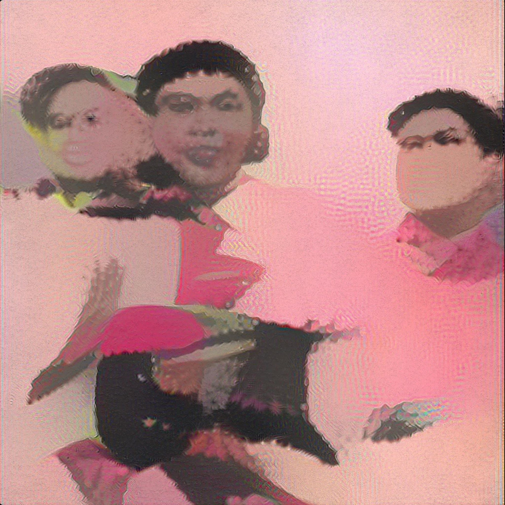
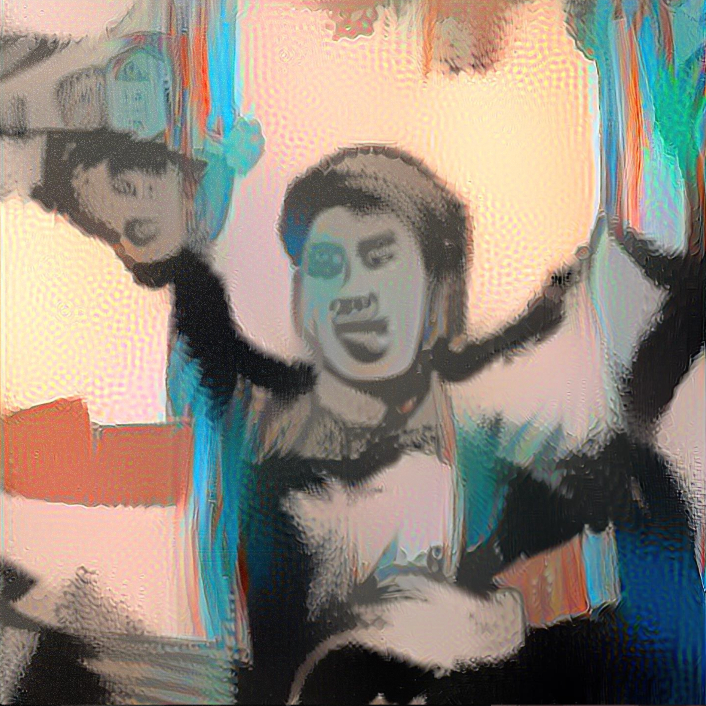
StyleGAN 2 with Style Transfer trained on custom dataset
Reverberations (2020-21)
This short film looks at maintenance of the sound and image of Mao's China through CCP propaganda posters made from the 1950s to 1980s and the audio reverberations of Mao's now iconic Tiananmen Square speech in 1949 . A dataset of over 2000 propaganda posters were collected and carefully prepared from the Shanghai Propaganda Poster Art Center as training data into a Generative Adversarial Network (Style GAN 2 ADA). The machine learning model learns the features of the input dataset and attempts to recreate new images from the features it has learned from the data.
1949: The ghosts of a public square filled with bodies caught up in the fervor of victory. The sound of a single voice through multiple loudspeakers echoing throughout Tiananmen Square. The voice bouncing off the surrounding concrete, no longer dampened by human bodies. The founding of the People's Republic of China was marked by this grand celebration of victory over the Kuomintang and western imperialist powers. Mao Ze Dong looked down at the square from above and let his voice ring out after each phrase as if to allow the space between the echoes to transfer into the bodies and minds of his audience. As this historic speech was uploaded and poorly transferred into digital space, the sounds of the reverb and echo become compressed and augmented. A metallic ring stretches the space in between words and myth.
I remember hearing this famous speech through poorly transferred audio recordings as a teenager. I never remembered or could decipher what was actually being said with Mao's heavy Hunanese accent. But the sound of the echo and the pauses in between remained etched in my mind as an audio map of a mythologized moment. The space seemed infinite and Mao's voice perforated through any form of matter. The faces coming from the audience looked as a nebulous forgotten cloud leftover by the last rain. Distant faces in foggy memories all pierced with the knives of a loud voice. In this piece, the actual words from the audio were cut out leaving only the tails of the amplified and stretched reverberation of Tiananmen Square in a single moment in 1949. The space in between words blur old boundaries.
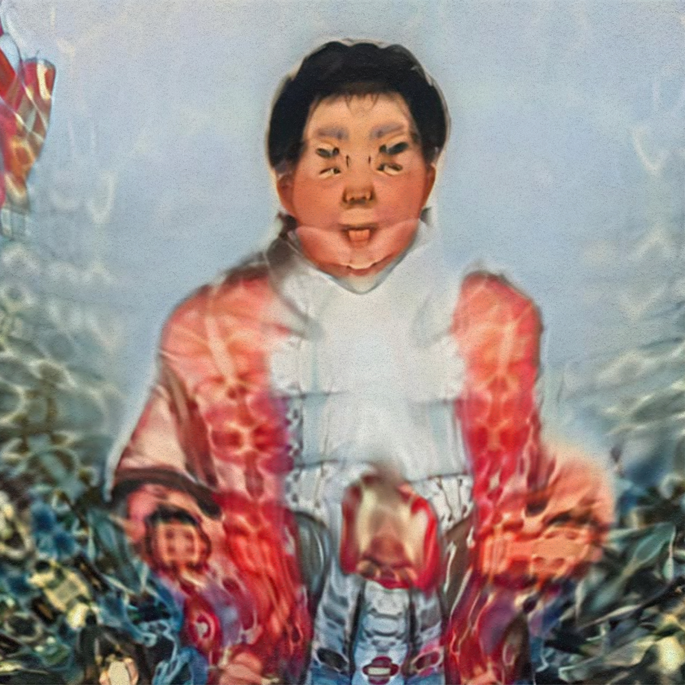
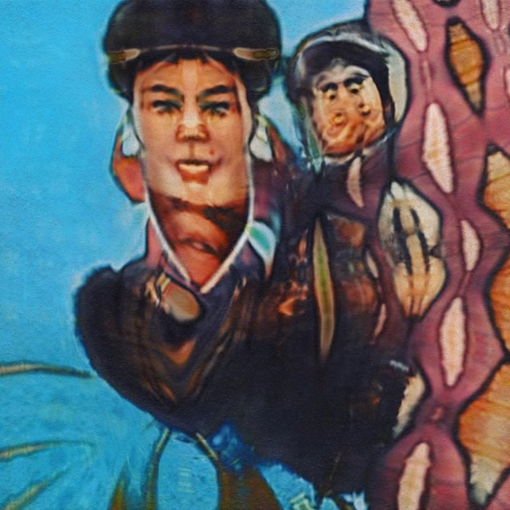
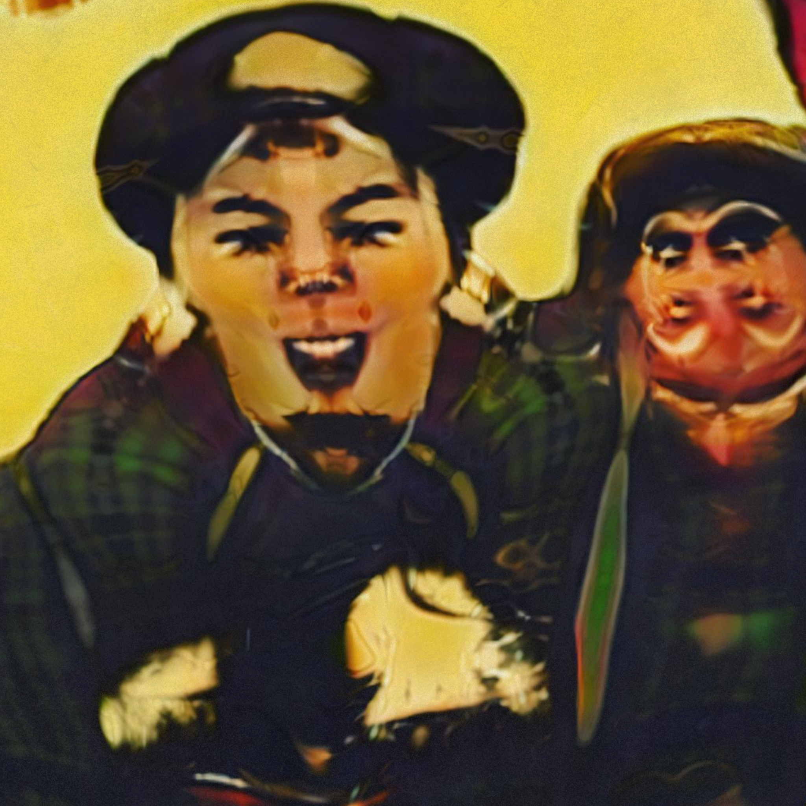
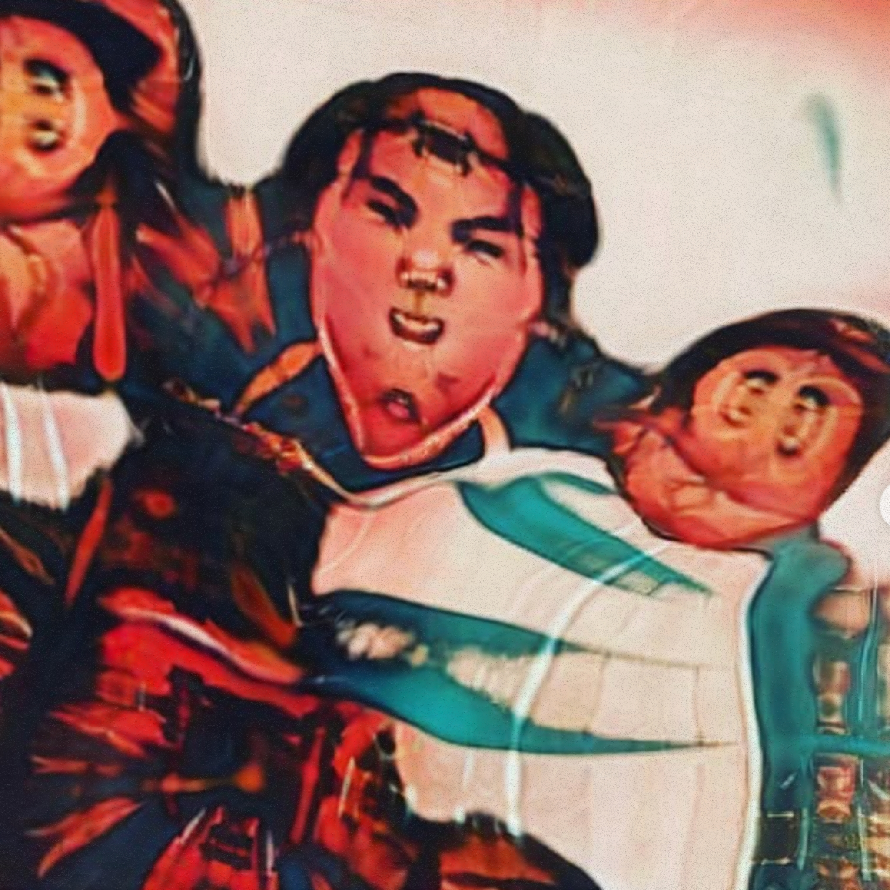
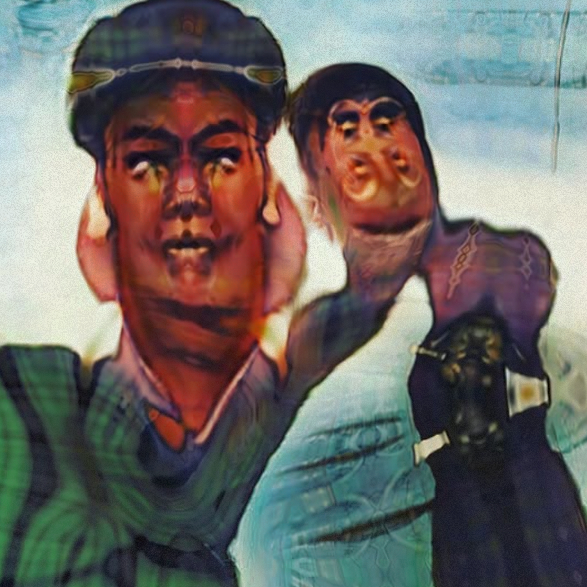
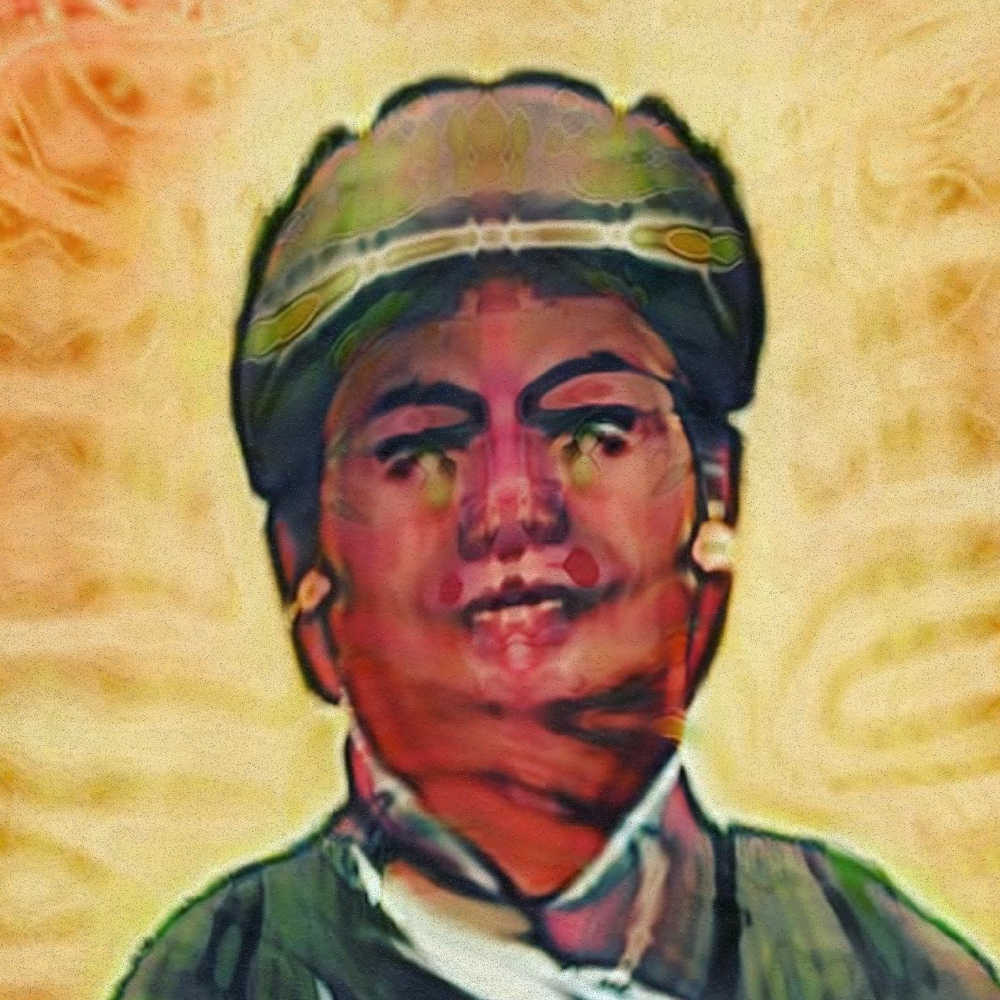
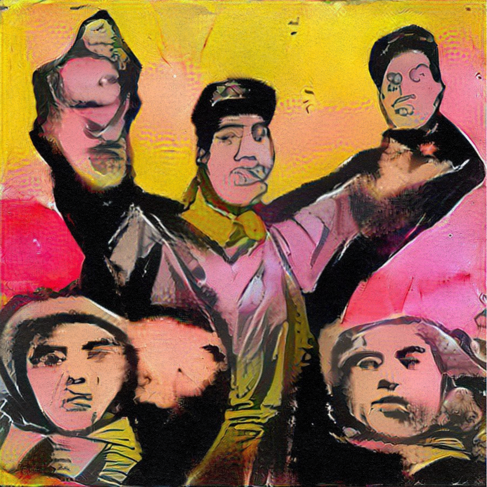
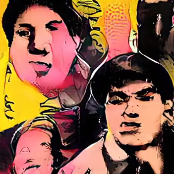
Images 1-6, StyleGAN 3; Image 9, StyleGAN 2 ADA
About the dataset
2000+ images were collected from the Shanghai Propaganda Art Centre, as well as Internet Archive, and old books. Cropped to 512x512 and trained on a Nvidia 2070 GPU.
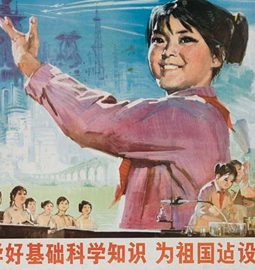
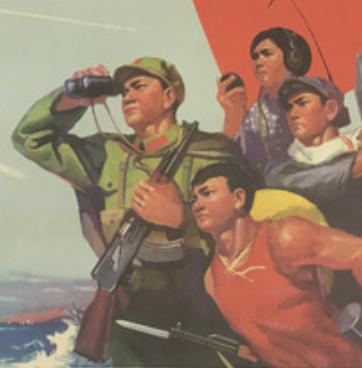
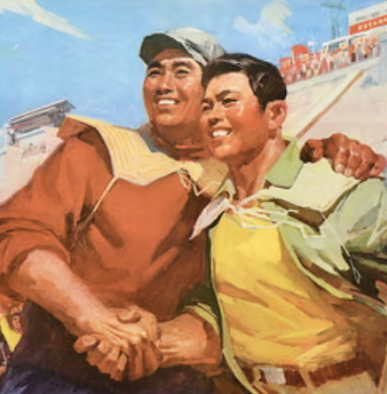
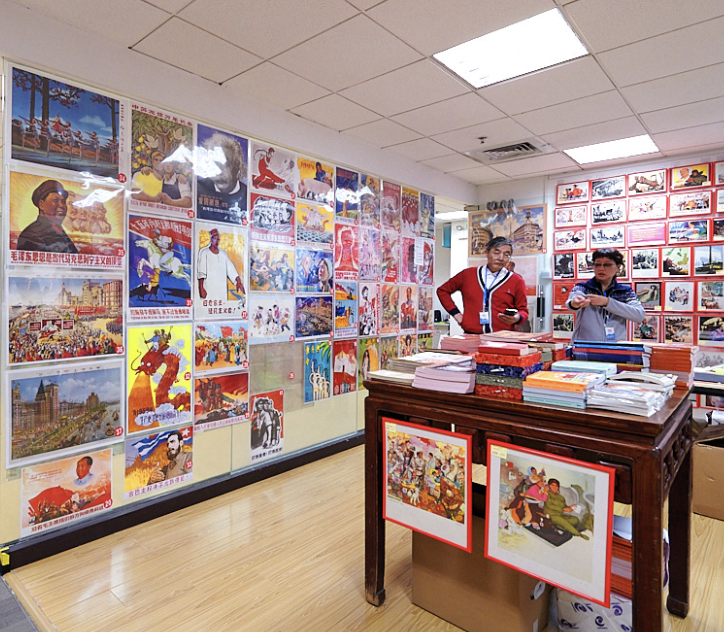